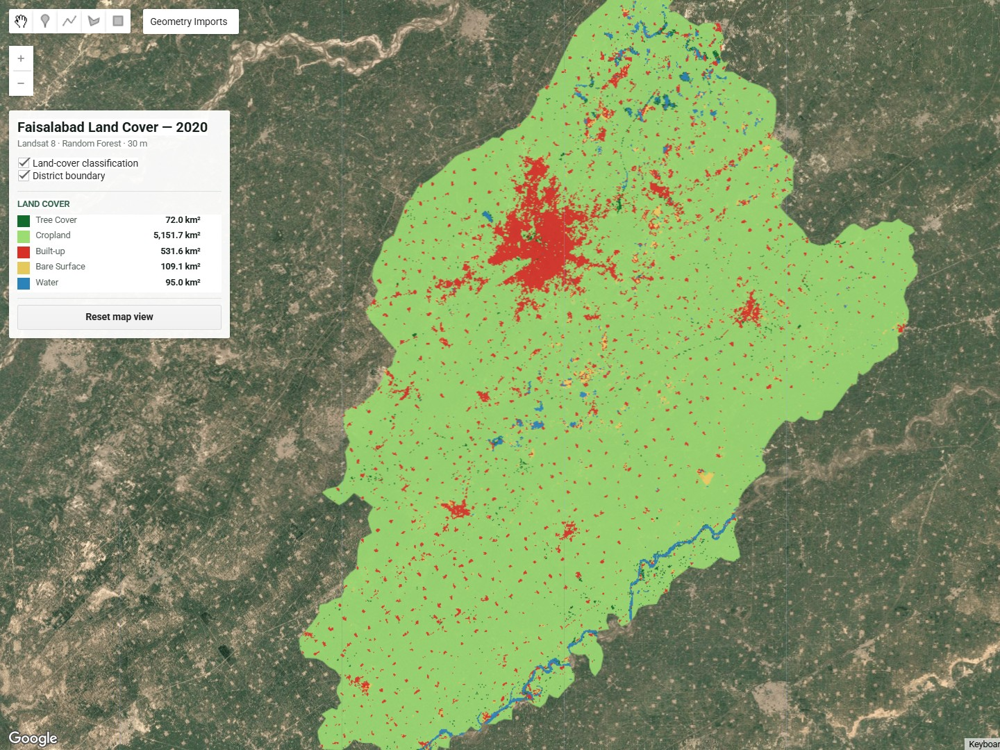
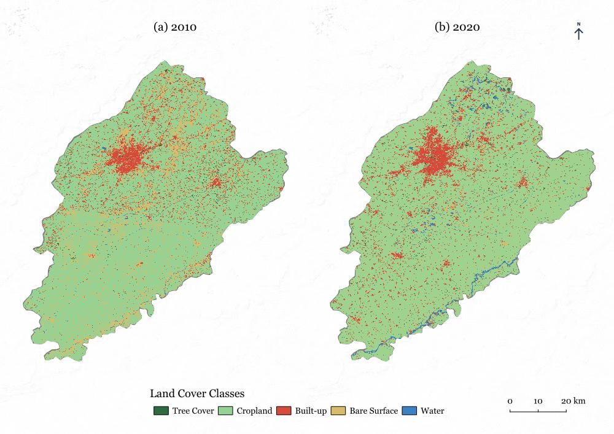

Preprocessing
Collection 2 Level-2 imagery, scaling, cloud/shadow and saturation masking.

A Random Forest workflow using Landsat imagery to classify broad land-cover patterns in 2010 and 2020, with emphasis on reference-data quality, temporal feature engineering and error diagnosis.
This project explored a consistent supervised classification workflow across two Landsat eras under limited historical reference information. Five broad classes were mapped: Tree Cover, Cropland, Built-up, Bare Surface and Water.
Reference polygons were interpreted independently for each year. The 2020 samples could be checked against historical high-resolution imagery and Landsat time series, while the 2010 samples relied more strongly on Landsat composites, spectral indices, seasonal behaviour and historical imagery where available.
How can a supervised Landsat classification be made more defensible when historical reference information is limited and spectral confusion is concentrated in mixed or dynamic land-cover settings?
The workflow combined standard spectral information with seasonal and temporal diagnostics, then used spatial error inspection to identify ambiguous reference samples and mixed pixels.
Collection 2 Level-2 imagery, scaling, cloud/shadow and saturation masking.
Optical bands, temperature, NDVI, MNDWI, NDBI, BSI and seasonal metrics.
Year-specific polygons placed within visually homogeneous land-cover patches.
300-tree model with class-stratified polygon-level training and validation split.
Confusion patterns examined spatially to refine ambiguous samples and temporal features.
Cropland remained the dominant mapped class in both years, while the classified built-up footprint was larger in 2020. Cross-year differences in bare surface, water and tree cover are interpreted more cautiously because reference quality, river conditions and mixed pixels affect direct comparability.

Error analysis showed that exposed riverine surfaces could be confused with built-up land in the 2010 imagery. Adding temporal MNDWI and BSI statistics, together with targeted samples for moist exposed surfaces, reduced this error along the Ravi corridor.
A separate audit of the 2020 Tree Cover predictions revealed mixed 30 m pixels where cropland contained field-boundary trees, roadside vegetation or canal trees. Adding representative cropland samples from these mixed settings reduced over-prediction of Tree Cover.
Historical reference information was substantially weaker for 2010 than for 2020, and the validation is an internal polygon-level holdout rather than independent ground validation. The 2010–2020 comparison is therefore treated as exploratory rather than as a precise change-detection product.